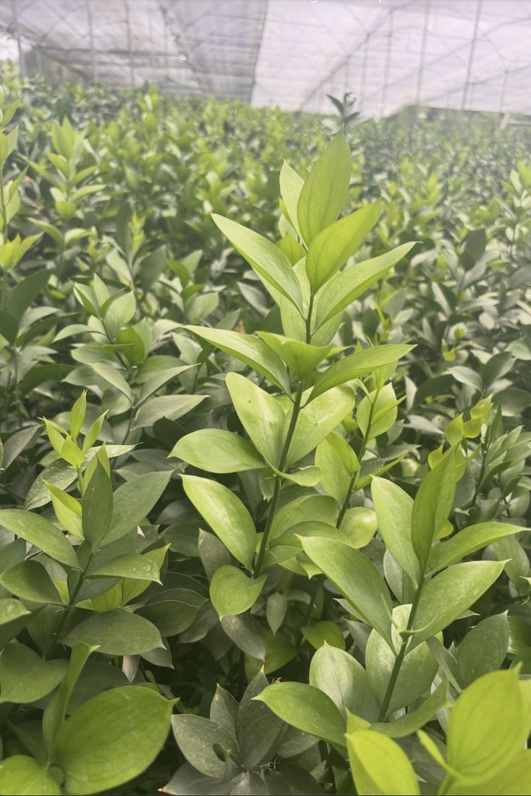
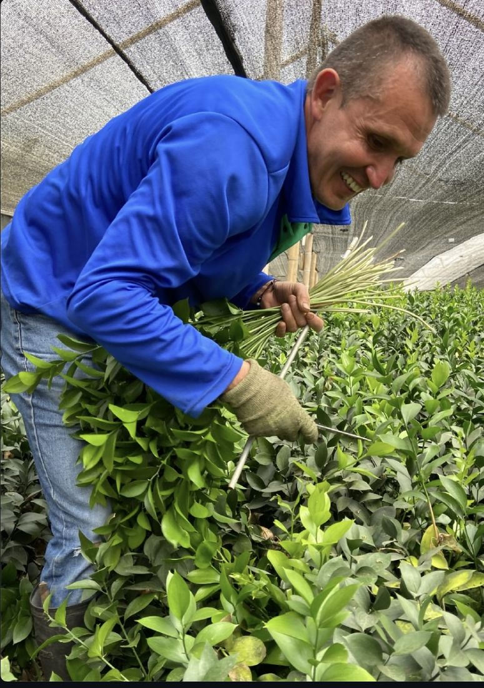
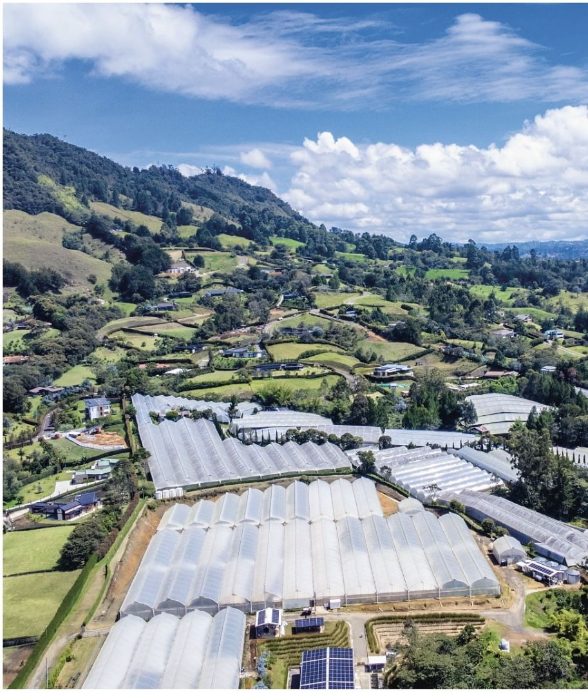

Producto principal
Rusco israelí
Hoja ancha, brillante y de verde intenso. Resiste bien el transporte y dura en florero mucho más que la flor que acompaña.
Farm to customer
Cultivado bajo invernadero, cortado a mano y despachado sin intermediarios.
Solicitar cotizaciónDel cultivo a su cliente
Cada tallo sale de nuestra finca con el mismo verde intenso con que se cortó. Sin bodegas de paso ni intermediarios: lo que usted recibe es lo que cultivamos.
Productos
Producto principal
Hoja ancha, brillante y de verde intenso. Resiste bien el transporte y dura en florero mucho más que la flor que acompaña.

Línea premium
Tallos seleccionados por largo, color y forma de hoja. Para floristerías y diseñadores que no aceptan relleno.

Bajo pedido
Usted define el largo de tallo, el tamaño del bonche y el empaque. Nosotros cortamos para su fecha de entrega.
Proceso
El rusco crece bajo invernadero y polisombra, protegido del sol directo y de la lluvia. Así la hoja conserva su color.
Cada tallo se corta a mano cuando la hoja está madura y firme. Nada se corta antes de tiempo para llenar un pedido.
Se clasifica por largo y calidad de hoja, se hidrata y se arma en bonches parejos.
Sale empacado de la finca hacia su negocio. Usted sabe de dónde viene cada caja.
La finca
Green Bouquet nace en el campo. Los mismos invernaderos que ve en la foto son los que abastecen cada pedido, y las mismas manos que cortan son las que revisan la calidad.
Por eso podemos responder por cada tallo.
